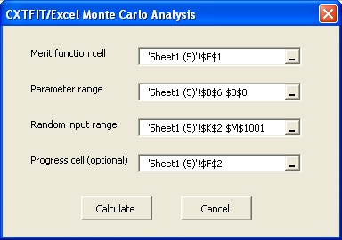

Section 6: Monte Carlo Analysis
Suppose that we want to evaluate the global uncertainty/sensitivity of dispersivity, mobile water fraction, and mass trasfer coefficient for the simulation of the 3H2O breakthrough curve. We start from Section 2 and use the mobile-immobile water model at first, then we will create random input and conduct Monte Carlo simulation.- Make a copy of Sheet1, work on sheet Sheet1 (5)
- Update the forward prediction with the mobile-immobile model
- Create random input values
- Open Monte Carlo Analysis dialog to perform Monte Carlo simulation
Add values for the mobile water fraction and mass transfer coefficient in cells B7 and B8 (Fig. 6.1).
Fig. 6.1 Update the forward prediction for Monte Carlo analysis
Change the formula in C11 to =MIM(1, A11, B$4, B$2/B$6, B$7, B$8), double click on the right bottom corner of cell C11 to extend the formula.
Remove the contents in C6:H6 and F2:F3
Change the formula to =SQRT(SUMSQ(D11:D46)/(COUNT(B11:B46)-COUNT(B6:B8))) in F1.
We use RMSE instead of SSR as the merit function because RMSE is an approximation of the fitting error and has the same unit as concentration. In case of reduced concentration for observation in this example, it is a relative error.
Type in =RAND() in cell G2, extend the formula to G1001. This creates 1000 random numbers uniformly distributed between 0 and 1 (Fig. 6.2).
Fig. 6.2 Input random values for Monte Carlo analysis
Select cells G2:G1001, press Ctrl+C
Select cell H2, select menu Edit->Paste as special..., check Value, click OK. This will paste it as values in cells H2:H1001. Repeat the operation to copy it as values in I2:I1001, and J2:J1001.
Type in formula =EXP(-4+6*H2) in cell K2, double click on the right bottom corner of cell K2 to extend the formula. Lambda is sampled in randomly distributed values between -4 and 2 (lambda ranges from 0.02 to 7.4).
Similarly, type in formula =I2 in cell L2, extend the formula. Mobile water fraction is sampled between 0 and 1; type in formula =J2*10 in cell M2, and extend the formula. The mass transfer coefficient is sampled between 0 and 10. The contents in G2:G1001 can be removed then.
Select menu CXTFIT->Monte Carlo analysis... to open Monte Carlo Analysis dialog (Fig. 6.3).

Fig. 6.3 Monte Carlo Analysis dialog
Select the merit function cell, parameter range, random parameter input range, and progress cell as shown in Fig. 6.3. Click Calculate.
Cell F2 shows the current set of parameters that is calculating during the process. The corresponding RMSE is recorded right next to the random parameter input range (column N). The RMSE is plotted against the parameters in Fig. 6.4. The small amount of sampling results show the parameter uncertainty is quite significant as long as the measurement error is equal to or greater than 0.03.
Fig. 6.4 Monte Carlo analysis results